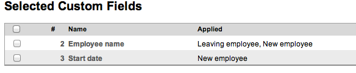
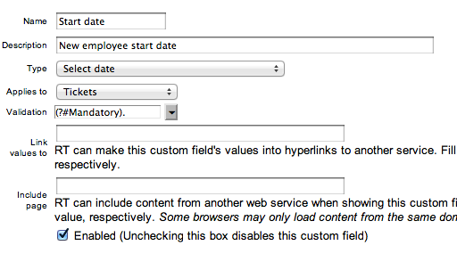
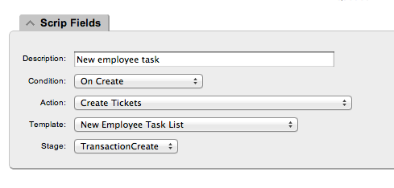
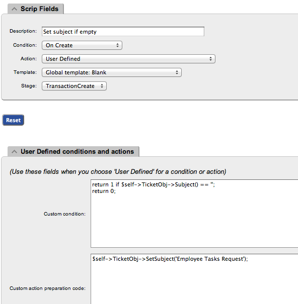

RT Setup
Create Queue
For this setup foll wing queues are required:
Admin
New Employee
Leaving Employee
Create Template With Unique Name
Each queue will need one template. Template name used for the SQL update statement, so please make sure that name is unique. Template name must correspond to that of Google Doc worksheet.
Create Queue Custom Fields
Create custom fields for each queue and set Validation. In our case it is simply se to Mandatory.

Employee Name

Date Fields
New employee and Leaving employee will need to have different date fields Start date and Leave date fields correspondingly.

Link template with queue
Create Scrip(s)
First script is required - it creates children tickets in queues. Without this script it will not work.

Second one is just a convenience scrip - it will set subject of the ticket if it was omitted.

Both queues are required to have these scripts, because they are queue specific.